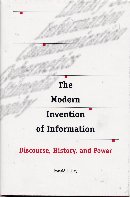

|  |
| About IR |
| Editors |
| Author instructions |
| Copyright |
| Author index |
| Subject index |
| Search |
| Reviews |
| Register |
| Home |
Day, Ronald E. The modern invention of information: discourse, history and power. Carbondale, IL: Southern Illinois University Press, 2001. x,139pp. ISBN 0-8093-2390-7 $35.00
Ronald Day's key purpose in this book is, 'to understand the interlinking of a variety of historical streams into a discourse on "information".' This is done from the perspective of literary and critical theory, with the objective of understanding how the concept of 'information' is embedded in modern culture.
The first 'historical stream' is that of 'documentation', as developed by Otlet and La Fontaine (who was awarded the Nobel Peace Prize in 1913) and particularly as expounded by Briet in 'Qu'est-ce que la documentation?' Day shows that Briet perceived documentation as a movement towards the coordination of organizational activity through standardization. Briet viewed documentation as part of the 'modern', 'scientific' progress of mankind towards some unified future, achieved through the work of UNESCO in bringing the 'scientific' ideal to the developing world. 'Documentation' is, thus, embedded in modernity and in the cultural rhetoric of scientific progress.
I was a little surprised to find no reference here to the rise of 'documentation' in the USA. What is now the American Society for Information Science and Technology was originally the American Documentation Institute (founded in 1937) and did not change its name until 1963 (without the word 'Technology'). The ADI was established with a technological imperative - to foster the application of micro-photography in the management of documentation and this link between technology and the organization and transmission of 'information' is certainly central to Day's argument.
From Briet, Day moves on to Shannon, Weaver and Wiener and the rise of 'information theory' and 'cybernetics'. He shows how Shannon's scientific theory, which is essentially concerned with the capacity of telecommunication channels, is transformed by Wiener into a general, 'scientific' theory of communication of all kinds. He notes the necessary failure of such a 'theory', which is based on the concept of designing language to cope with everything Man needs to communicate, to deal with the inexpressible and subconscious aspects of life, which, nevertheless, may be communicated by non-verbal and other metaphorical means.
Wiener was motivated by a liberal conscience and he was writing at the height of the Cold War, and Day notes:
Wiener's reduction of language to a communicational and informational economy avoids an encounter with language or affects in terms of some radical alterity, fracture , and chaos. His reduction brings language and being into a scale and economy of management and leads to Wiener's conjoining of the terms "communication" and "control" (p. 49) *.
Day elaborates on that 'conjoining' very persuasively, calling upon other, European critics of Wiener's position to demonstrate how the elision of communication into control in defense (as Wiener saw it) of democracy comes close to the discipline exercised in totalitarian states - the opposite of what Wiener was actually seeking.
Curiously, apart from an initial dalliance, information science has had little interaction with the 'information theory' of Shannon, Weaver and Wiener. The concepts have had much more impact in communication studies - probably because of Wiener's work - and most of the models presented in texts on communication appear to be derived directly from the conduit model. Why there has been so little impact in information science could be a subject worth addressing - although a detailed analysis might reveal that it is not missing, only hidden.
According to Day, Wiener's vision of the conduit metaphor as a means of social control through the reductive use of language is continued by Pierre Lévy's concept of the 'Virtual'. This is, perhaps, the densest chapter in the book, with forays into the work of Deleuze, Guattari and Freud, to demonstrate that Lévy turns the concept of 'virtual' developed by Deleuze and Guattari on its head, to the extent that the work of two left-wing writers becomes the basis for, as Day puts it, Lévy's "rather capitalistic utopia of information in the 'virtual age'". This chapter is not only dense with argument, it is also, perhaps, a little too long (at thirty pages) - the non-specialist becomes rather tired of what is, obviously, for the author, an enjoyable intellectual exercise. However, the points might have been made rather more briefly, accomplishing the same end. That is, conveying the understanding that, with Lévy, we have the ultimate absorption into capitalism of the Utopia of the 'virtual' through the identity of information with money. Through that identity, of course, we also have the identity of information with power and it was coincidental that, as I was reading the book on a flight home, I came across an article in the International Herald Tribune on how hackers are developing free software to overcome the attempts by the Chinese government to block access to those parts of the Internet they would prefer their citizens not to see. In this case, we have the rather curious phenomenon of a radical protest movement (the hackers) seeking to make the Internet free for, what? Access to the Coca Cola site, perhaps?
For a kind of antidote to the technologised, controlling mode of 'information' presented in these four chapters, Day turns to the work of Martin Heidegger and Walter Benjamin who, writing in the 1930s, 'attempted to demystify the developing concept of information and the reification of knowledge that was occurring in mass culture and through technical organization.' It was no coincidence, of course, that Otlet was presenting his vision of 'documentation' at the same time.
Heidegger is, at one and the same time, one of the most influential philosophers of the 20th century and is also renowned as one of the most difficult of philosophers to engage with. Fortunately, Day calls upon his later essays and public lectures, which are rather more approachable, and demonstrates that Heidegger was well aware of the potential for social control in the concept of cybernetic systems applied to language and communication. For Heidegger, the problem of modern science was that it emphasised the 'objective' and the quantitative, at the expense of the 'subjective' and interpretative. Day compares Heidegger and Otlet:
For Otlet, his vision of technological determinism is history, whereas for Heidegger, this type of historical vision is the imposition of metaphysics and positive science upon the occurrence of history itself. (Page 98)
Benjamin's critique is from a different perspective. He is usually regarded as a 'member' of the Frankfurt School, which gave rise to critical theory through a re-examination of Marx in the context of the socio-political conditions prevailing after the First World War. Benjamin addressed the phenomenon of the reification of 'information' as an empirical phenomenon, especially in the mass media and the resulting destruction of the original direct experience of the phenomena re-presented in the media and of the building of accounts in traditional society. Benjamin, in Day's words:
...attempts to read [the violence neutralised by media] back into fetished knowledge, that is, back into information, demonstrating the forces of power and reification that construct the bourgeois construction of information.
The final chapter is brief and to the point. It formulates a critique of the way 'information' is promulgated as a simplistic and non-problematic objective, empirical fact through notions of the 'information society', the 'information super-highway', and so on. Day calls for a critical examination of the concept of 'information' within the context of cultural and social production and this book is a step in that direction.
This is a difficult but rewarding text. I would hesitate to recommend it for students following a Master's programme in information science and there are, perhaps, few PhD students who would take it in their stride, but the central argument ought to be understood and valued. (A lengthy summary on the author's Web site would be welcome.) With the commodification not only of 'information' but of 'knowledge' (as in 'knowledge management') and the de-personalization of these concepts, we are in danger (as ever) of accepting the controlling instincts of the state, to the detriment of our own instinctive creativity. As Day notes, in Chapter 5:
...a naive historical understanding of information in modernity is part and parcel of a naive understanding of history and... together these mask attempts at hegemony and domination, from the level of mass force to the inculcation and control of everyday life. (page 94)
Professor Tom Wilson
Editor-in-Chief
October 2002
* Note: the quotation illustrates a difficulty that students of information science may have with the book - its use of the technical language of literary and critical theory. 'Alterity' is a technical term derived from the German word, 'alter', meaning 'Other'. 'Alterity', therefore, is 'Otherness' - about which another essay would be required!
Reference
Lee, Jenifer "Piercing the 'Great Firewall'. How hackers outfoxed Beijing's bid to block Internet." International Herald Tribute, 11 October 2002, 1, 6. [Available at: http://www.iht.com/articles/73399.html Site visited 12th October 2002]
How to cite this review
Wilson, T.D. (2002) Review of: Day, Ronald E. The modern invention of information: discourse, history and power. Carbondale, IL: Southern Illinois University Press, 2001. Information Research, 8(1), review no. R072 [Available at: http://informationr.net/ir/reviews/revs072.html]